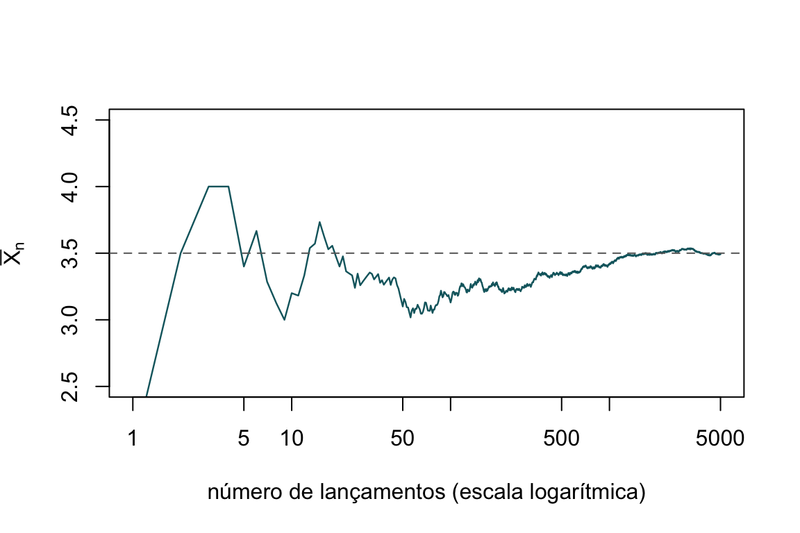
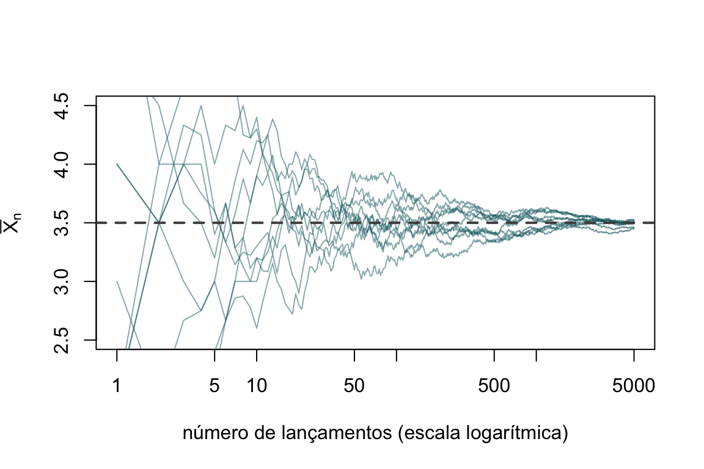
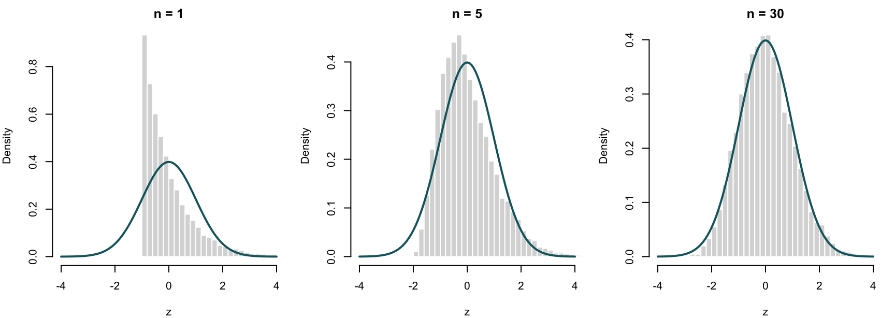
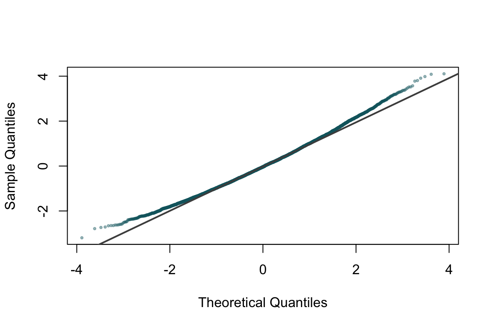
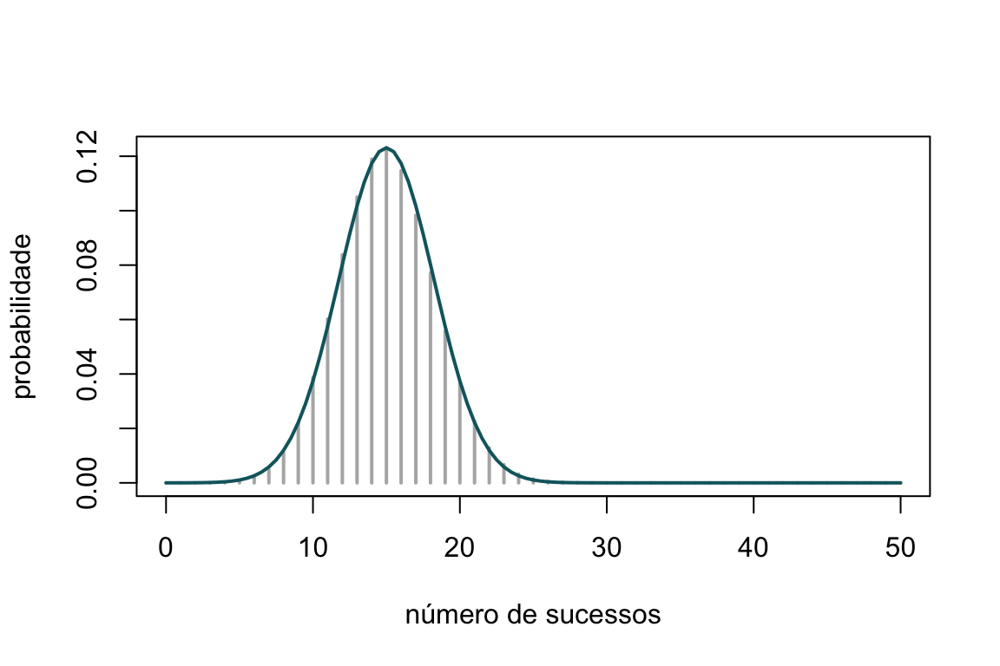

Capítulo 24 Teoremas limites
Ao longo dos capítulos anteriores, gerámos repetidamente amostras aleatórias e calculámos médias, proporções e outras estatísticas. Sempre que o fizemos, apoiámo-nos — por vezes de forma implícita — em dois resultados que constituem o alicerce de toda a inferência estatística e de toda a simulação: a lei dos grandes números e o teorema limite central. São eles que explicam por que razão a média de muitas observações se aproxima do valor esperado, e por que razão a distribuição normal surge, uma e outra vez, onde menos se espera. Este capítulo dedica-se a compreendê-los, a demonstrá-los nos casos acessíveis e, sobretudo, a vê-los em ação através da simulação.
Os teoremas limites clássicos da probabilidade referem-se a sequências de variáveis aleatórias independentes e identicamente distribuídas (i.i.d.). Consideremos uma tal sequência \(X_1, X_2, \ldots\) com média comum \(E(X_i) = \mu < \infty\), e definamos a soma parcial
\[ S_n = X_1 + X_2 + \cdots + X_n. \]
A média amostral é \(\bar{X}_n = S_n / n\). A lei dos grandes números afirma que \(\bar{X}_n\) converge para \(\mu\) quando \(n \to +\infty\); o teorema limite central vai mais longe e descreve como se comporta o desvio de \(\bar{X}_n\) em torno de \(\mu\), revelando que, depois de convenientemente reescalado, esse desvio é aproximadamente normal, seja qual for a distribuição de partida.
24.1 Contexto histórico
A primeira versão da lei dos grandes números deve-se a Jacob Bernoulli, que a demonstrou para proporções de sucessos em provas de Bernoulli na sua obra Ars Conjectandi, publicada postumamente em 1713. Bernoulli chamou-lhe o seu “teorema de ouro” e dedicou-lhe vinte anos de trabalho: era a prova matemática de uma convicção antiga, a de que a frequência relativa de um acontecimento tende a estabilizar em torno da sua probabilidade à medida que se acumulam observações. O nome “lei dos grandes números” foi cunhado mais tarde, em 1837, por Siméon Denis Poisson.
A distinção entre as versões fraca e forte da lei — que abaixo tornaremos precisa — foi clarificada no início do século XX: Émile Borel estabeleceu em 1909 a lei forte para o caso binomial, e Andrei Kolmogorov deu-lhe, nos anos 1930, a formulação geral que hoje usamos, na sequência da sua axiomatização da teoria da probabilidade.
O teorema limite central tem uma história igualmente ilustre. Abraham de Moivre obteve, em 1733, a aproximação normal da distribuição binomial; Pierre-Simon Laplace generalizou-a substancialmente em 1810; e a versão geral, com condições rigorosas, foi estabelecida por Aleksandr Lyapunov (1901) e, na forma que hoje é mais citada para variáveis i.i.d., por Lindeberg e Lévy. A designação teorema limite central — no sentido de teorema central da teoria — foi popularizada por George Pólya em 1920.
24.2 Modos de convergência
Falar de convergência de variáveis aleatórias exige cuidado, porque uma sucessão de variáveis aleatórias pode convergir em sentidos diferentes. Três modos interessam-nos aqui.
Diz-se que \(Y_n\) converge em probabilidade para \(Y\), e escreve-se \(Y_n \xrightarrow{P} Y\), se para todo o \(\varepsilon > 0\)
\[ \lim_{n \to \infty} P\big(|Y_n - Y| > \varepsilon\big) = 0. \]
Diz-se que \(Y_n\) converge quase certamente (ou com probabilidade \(1\)) para \(Y\), e escreve-se \(Y_n \xrightarrow{\text{q.c.}} Y\), se
\[ P\Big(\lim_{n \to \infty} Y_n = Y\Big) = 1. \]
Diz-se que \(Y_n\) converge em distribuição para \(Y\), e escreve-se \(Y_n \xrightarrow{d} Y\), se \(F_{Y_n}(y) \to F_Y(y)\) em todos os pontos \(y\) de continuidade de \(F_Y\).
Estes três modos não são equivalentes. A convergência quase certa é mais forte do que a convergência em probabilidade (implica-a), e esta, por sua vez, é mais forte do que a convergência em distribuição. A lei fraca dos grandes números diz respeito à convergência em probabilidade; a lei forte, à convergência quase certa; o teorema limite central, à convergência em distribuição. É esta a distinção que dá nome aos resultados.
24.3 Lei fraca dos grandes números
A lei fraca dos grandes números é também conhecida como teorema de Bernoulli. De acordo com a lei, a média dos resultados obtidos num grande número de provas está próxima da média da população, com probabilidade cada vez mais alta à medida que o número de provas aumenta.
Enunciar e demonstrar a lei fraca dos grandes números no caso de variância finita, compreender o seu significado e ilustrá-lo por simulação.
Sejam \(X_1, \ldots, X_n\) variáveis aleatórias i.i.d., cada uma com média \(\mu\) e variância \(\sigma^2 < \infty\). Então, para todo o \(\varepsilon > 0\),
\[ \lim_{n \to \infty} P\big(|\bar{X}_n - \mu| > \varepsilon\big) = 0, \qquad \text{ou seja,} \qquad \bar{X}_n \xrightarrow{P} \mu. \]
Demonstração. A média amostral tem valor esperado
\[ E(\bar{X}_n) = \frac{1}{n}\sum_{i=1}^{n} E(X_i) = \mu, \]
e, pela independência das observações, variância
\[ \operatorname{Var}(\bar{X}_n) = \frac{1}{n^2}\sum_{i=1}^{n}\operatorname{Var}(X_i) = \frac{\sigma^2}{n}. \]
Aplicando a desigualdade de Chebyshev à variável \(\bar{X}_n\), cuja média é \(\mu\) e cuja variância é \(\sigma^2/n\), obtém-se
\[ P\big(|\bar{X}_n - \mu| > \varepsilon\big) \leq \frac{\operatorname{Var}(\bar{X}_n)}{\varepsilon^2} = \frac{\sigma^2}{n\,\varepsilon^2}. \]
Fixado \(\varepsilon > 0\), o membro direito tende para zero quando \(n \to \infty\), o que estabelece a convergência em probabilidade. \(\qquad\blacksquare\)
A demonstração acima usa a hipótese de variância finita porque recorre à desigualdade de Chebyshev. Existe, porém, uma versão mais geral — o teorema de Khinchin — que garante a lei fraca exigindo apenas que a média \(\mu\) exista e seja finita, dispensando a hipótese sobre a variância. A demonstração desse resultado é mais delicada e recorre a funções características.
24.4 Lei forte dos grandes números
A lei fraca garante que, para \(n\) grande, é improvável que \(\bar{X}_n\) se afaste de \(\mu\). A lei forte afirma algo qualitativamente mais poderoso: que a própria sucessão \(\bar{X}_1, \bar{X}_2, \ldots\) converge para \(\mu\), encarada como uma trajetória, com probabilidade \(1\).
Sejam \(X_1, X_2, \ldots\) variáveis aleatórias i.i.d. com \(E|X_1| < \infty\) e média \(\mu\). Então
\[ \bar{X}_n \xrightarrow{\text{q.c.}} \mu \qquad \text{quando} \qquad n \to \infty. \]
Este é o teorema de Kolmogorov. Note-se que exige apenas a existência da média — nem sequer se assume variância finita. A demonstração está para além do âmbito deste livro, mas o seu significado é fundamental e vale a pena fixá-lo.
A diferença entre as duas leis é subtil mas importante. A lei fraca diz que, para cada \(n\) suficientemente grande, a probabilidade de \(\bar{X}_n\) estar longe de \(\mu\) é pequena — mas não exclui que, ao longo da sucessão, ocorram ocasionalmente afastamentos grandes. A lei forte garante que, para quase todas as trajetórias possíveis, a sucessão acaba por entrar e permanecer arbitrariamente perto de \(\mu\): os afastamentos grandes deixam de ocorrer a partir de certa ordem. É esta a garantia que legitima, em última análise, a interpretação frequencista da probabilidade e o método de Monte Carlo.
24.4.1 Ilustração por simulação
Vejamos a lei dos grandes números em funcionamento. Simulemos o lançamento repetido de um dado equilibrado, cuja média teórica é \(\mu = (1+2+3+4+5+6)/6 = 3{,}5\), e observemos a média acumulada \(\bar{X}_n\) a estabilizar em torno desse valor à medida que \(n\) cresce.
set.seed(2024)
n <- 5000
lancamentos <- sample(1:6, size = n, replace = TRUE)
media_acumulada <- cumsum(lancamentos) / seq_along(lancamentos)
plot(media_acumulada, type = "l", col = "#10656d", lwd = 1.2,
ylim = c(2.5, 4.5), log = "x",
xlab = "número de lançamentos (escala logarítmica)",
ylab = expression(bar(X)[n]))
abline(h = 3.5, lty = 2, col = "grey40")
Figura 24.1: Média acumulada dos lançamentos de um dado equilibrado em função do número de lançamentos. A linha tracejada assinala a média teórica, 3,5.
O gráfico mostra com clareza o fenómeno: nos primeiros lançamentos a média acumulada oscila bastante, mas rapidamente se aproxima de \(3{,}5\) e aí permanece. A escala logarítmica no eixo horizontal ajuda a ver que a estabilização não é fruto do acaso de uma única trajetória. Para o confirmar, sobreponhamos várias trajetórias independentes.
set.seed(2024)
plot(NULL, xlim = c(1, n), ylim = c(2.5, 4.5), log = "x",
xlab = "número de lançamentos (escala logarítmica)",
ylab = expression(bar(X)[n]))
for (k in 1:10) {
x <- sample(1:6, size = n, replace = TRUE)
lines(cumsum(x) / seq_along(x), col = adjustcolor("#10656d", 0.5))
}
abline(h = 3.5, lty = 2, col = "grey30", lwd = 2)
Figura 24.2: Dez trajetórias independentes da média acumulada. Todas convergem para a média teórica, ilustrando a lei forte dos grandes números.
Todas as trajetórias, apesar de partirem de valores iniciais dispersos, convergem para a mesma reta horizontal. É precisamente esta a mensagem da lei forte: não é uma trajetória feliz que converge, são (quase) todas.
24.5 Teorema limite central
A lei dos grandes números diz-nos para onde converge a média amostral, mas nada diz sobre a rapidez dessa convergência nem sobre a forma das flutuações em torno do limite. É a essa pergunta que responde o teorema limite central, um dos resultados mais surpreendentes e úteis de toda a matemática.
Sejam \(X_1, X_2, \ldots\) variáveis aleatórias i.i.d. com média \(\mu\) e variância \(\sigma^2\), ambas finitas, com \(\sigma^2 > 0\). Então a soma padronizada converge em distribuição para a normal padrão:
\[ Z_n = \frac{S_n - n\mu}{\sigma\sqrt{n}} = \frac{\bar{X}_n - \mu}{\sigma/\sqrt{n}} \;\xrightarrow{d}\; N(0, 1) \qquad \text{quando} \qquad n \to \infty. \]
Equivalentemente, para \(n\) grande, a média amostral é aproximadamente normal:
\[ \bar{X}_n \;\approx\; N\!\left(\mu,\; \frac{\sigma^2}{n}\right). \]
O que é notável — quase paradoxal — é que esta conclusão não depende da distribuição das \(X_i\). Sejam elas discretas ou contínuas, simétricas ou enviesadas, a distribuição da média padronizada converge sempre para a mesma curva em forma de sino. É esta universalidade que explica a onipresença da normal na estatística: sempre que uma quantidade resulta da soma de muitos contributos pequenos, independentes e de magnitude comparável, é natural que se comporte de forma aproximadamente normal.
O teorema garante convergência quando \(n \to \infty\), mas na prática usamo-lo como aproximação para \(n\) finito. A qualidade dessa aproximação depende fortemente da forma da distribuição de partida: para distribuições próximas da simetria, uns poucos termos bastam; para distribuições muito enviesadas ou com caudas pesadas, pode ser preciso um \(n\) considerável. A regra prática “\(n \geq 30\)”, frequente nos manuais, é apenas uma orientação grosseira e falha para distribuições fortemente assimétricas.
24.5.1 Ilustração por simulação
Para ver o teorema em ação, partamos de uma distribuição deliberadamente assimétrica — a exponencial de parâmetro \(1\), que tem média \(\mu = 1\) e desvio-padrão \(\sigma = 1\), e cuja densidade nada tem de “sino”. Vamos gerar muitas amostras de tamanho \(n\), calcular a média de cada uma, e observar a distribuição dessas médias à medida que \(n\) aumenta.
set.seed(2024)
simular_medias <- function(n, replicas = 10000) {
medias <- replicate(replicas, mean(rexp(n, rate = 1)))
# padronização: (media - mu) / (sigma / sqrt(n)), com mu = sigma = 1
(medias - 1) / (1 / sqrt(n))
}
z1 <- simular_medias(1)
z5 <- simular_medias(5)
z30 <- simular_medias(30)
op <- par(mfrow = c(1, 3), mar = c(4, 4, 2, 1))
for (par_z in list(list(z1, "n = 1"), list(z5, "n = 5"),
list(z30, "n = 30"))) {
hist(par_z[[1]], breaks = 40, probability = TRUE,
col = "grey85", border = "white",
xlim = c(-4, 4), main = par_z[[2]], xlab = "z")
curve(dnorm(x), add = TRUE, lwd = 2, col = "#10656d")
}
Figura 24.3: Distribuição da média amostral padronizada de observações exponenciais, para amostras de tamanho crescente. A curva a cheio é a densidade normal padrão. À medida que n aumenta, a assimetria da exponencial esbate-se e a distribuição das médias aproxima-se da normal.
par(op)A sequência de histogramas conta toda a história. Para \(n = 1\), a distribuição das médias é simplesmente a própria exponencial padronizada — visivelmente assimétrica, com uma cauda longa à direita. Para \(n = 5\), a assimetria já é bem menor. Para \(n = 30\), o histograma é praticamente indistinguível da curva normal sobreposta. Esta convergência, partindo de uma distribuição tão pouco parecida com um sino, é a demonstração visual da universalidade do teorema.
Podemos confirmar a normalidade de forma mais fina com um gráfico quantil-quantil, que compara os quantis empíricos com os da normal padrão. Se a aproximação for boa, os pontos alinham-se sobre a reta.
qqnorm(z30, main = "", col = adjustcolor("#10656d", 0.4), pch = 19, cex = 0.4)
qqline(z30, lwd = 2, col = "grey30")
Figura 24.4: Gráfico quantil-quantil das médias padronizadas para n = 30. O bom alinhamento sobre a reta confirma a proximidade à normal.
24.5.2 O caso de de Moivre-Laplace
O caso histórico original — a aproximação normal da binomial — é um caso particular do teorema limite central, obtido quando as \(X_i\) são variáveis de Bernoulli. Se \(X_i \sim \text{Bernoulli}(p)\), então \(S_n \sim \text{Binomial}(n, p)\) e o teorema garante que, para \(n\) grande,
\[ \frac{S_n - np}{\sqrt{np(1-p)}} \;\xrightarrow{d}\; N(0,1). \]
É este resultado que justifica a clássica aproximação da binomial pela normal. Ilustremo-lo comparando a distribuição exata de uma binomial com a densidade normal correspondente.
set.seed(2024)
n_ensaios <- 50
p <- 0.3
x <- 0:n_ensaios
prob <- dbinom(x, n_ensaios, p)
plot(x, prob, type = "h", lwd = 2, col = "grey70",
xlab = "número de sucessos", ylab = "probabilidade")
curve(dnorm(x, mean = n_ensaios * p,
sd = sqrt(n_ensaios * p * (1 - p))),
add = TRUE, lwd = 2, col = "#10656d")
Figura 24.5: Distribuição binomial(50; 0,3) (barras) e aproximação normal (curva). Para n moderado, o acordo já é notável.
24.6 Síntese
A lei dos grandes números e o teorema limite central formam a espinha dorsal da estatística inferencial e justificam a própria legitimidade da simulação. A primeira garante que a média de muitas observações converge para o valor esperado — na versão fraca, em probabilidade; na versão forte, quase certamente. O segundo descreve as flutuações em torno desse limite, mostrando que, depois de reescaladas por \(\sqrt{n}\), elas são universalmente normais, independentemente da distribuição de partida. Juntos, estes resultados dizem-nos não só que as estimativas de Monte Carlo convergem, mas a que ritmo e com que incerteza — tema que retomaremos no próximo capítulo, ao aproximar integrais.
24.7 Exercícios
1. Simule o lançamento de uma moeda equilibrada \(n = 10\,000\) vezes e represente graficamente a proporção acumulada de caras em função do número de lançamentos. Confirme visualmente a convergência para \(0{,}5\) e comente a rapidez com que a proporção se estabiliza.
2. Repita o exercício anterior com uma moeda viciada, em que a probabilidade de cara é \(0{,}7\). Sobreponha a reta horizontal correspondente ao valor teórico e verifique a convergência.
3. Gere \(n = 2000\) observações de uma distribuição de Poisson de parâmetro \(\lambda = 4\) e represente a média acumulada. Compare a trajetória com a média teórica e discuta se a lei se aplica (a Poisson tem variância finita?).
4. Ilustre a lei dos grandes números para a média amostral de uma distribuição uniforme \(\mathcal{U}(0,1)\). Qual o valor para o qual a média acumulada deve convergir? Confirme por simulação.
5. A distribuição de Cauchy padrão não tem média finita. Gere a média
acumulada de \(n = 5000\) observações de uma Cauchy (rcauchy) e represente-a
graficamente. A média acumulada converge? Explique o resultado à luz das
hipóteses da lei dos grandes números.
6. Verifique numericamente a lei fraca dos grandes números: para \(X_i \sim \mathcal{U}(0,1)\) (média \(1/2\), variância \(1/12\)) e \(\varepsilon = 0{,}05\), estime por simulação a probabilidade \(P(|\bar{X}_n - 1/2| > \varepsilon)\) para \(n = 10, 50, 100, 500\) e confirme que decresce. Compare com o majorante de Chebyshev \(\sigma^2/(n\varepsilon^2)\).
7. Ilustre o teorema limite central partindo de uma distribuição uniforme \(\mathcal{U}(0,1)\). Gere \(10\,000\) médias de amostras de tamanho \(n = 2, 5, 12\) e sobreponha a densidade normal apropriada. A partir de que \(n\) a aproximação lhe parece satisfatória? (A soma de doze uniformes esteve, de facto, na base de geradores antigos de números normais.)
8. Repita a ilustração do teorema limite central partindo de uma distribuição fortemente enviesada, como a log-normal \(\text{LogNormal}(0, 1)\). Compare a rapidez de convergência com a do caso exponencial estudado no texto. Qual necessita de um \(n\) maior para a aproximação normal ser aceitável?
9. Para a distribuição binomial \(\text{Binomial}(n, p)\) com \(p = 0{,}1\), compare graficamente a distribuição exata com a aproximação normal, para \(n = 10, 30, 100\). Confirme que, com \(p\) pequeno, é necessário um \(n\) maior do que o habitual para que a aproximação seja razoável, e relacione isto com a assimetria da binomial.
10. (Cobertura de um intervalo de confiança.) Uma consequência prática do teorema limite central é a validade aproximada do intervalo de confiança \(\bar{X}_n \pm z_{1-\alpha/2}\,s/\sqrt{n}\) para a média. Gere \(5000\) amostras de tamanho \(n = 40\) de uma exponencial de média \(1\), construa em cada uma o intervalo de confiança a \(95\%\) para a média, e estime a proporção de intervalos que efetivamente contêm o valor \(1\). A cobertura empírica aproxima-se de \(95\%\)?
11. (Efeito do tamanho da amostra na cobertura.) Repita o exercício anterior para \(n = 10, 40, 200\) e discuta como a cobertura empírica se aproxima do nível nominal de \(95\%\) à medida que \(n\) cresce. Relacione o resultado com a qualidade da aproximação normal para a média de observações exponenciais.
12. Combine as duas leis num único gráfico: para observações \(\mathcal{U}(0,1)\), represente simultaneamente (a) a média acumulada de uma trajetória a convergir para \(1/2\) e (b), num segundo painel, o histograma das médias de muitas amostras de tamanho \(n = 30\) com a normal sobreposta. Comente como cada painel ilustra um dos dois teoremas centrais do capítulo.